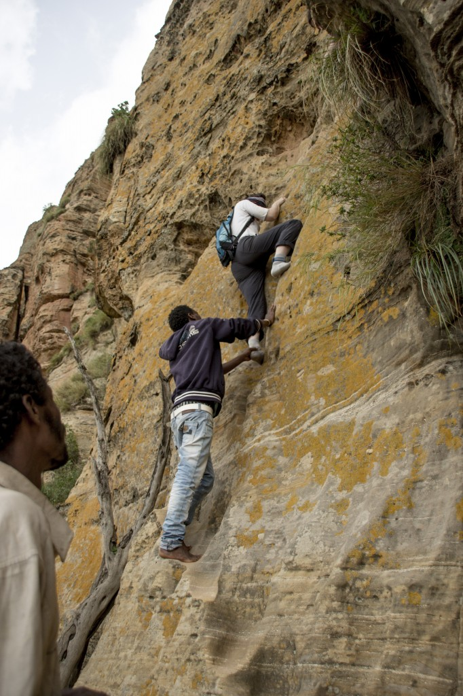

Sometimes your paths cross with people who are so enthusiastic about things that it’s hard not to follow them. It’s not really important if you know what it’s about – you listen carefully and got engaged so much that you think it must be great.
As I was listening to Charlotta I realised that climbing the rocks and visiting monasteries is exactly what I want to do then even if it requires an early morning wake-up or long hours on the bus.
We got on the bus at the crack of dawn and set off without any delay. I expected walking in the rocks and sightseeing some religious sights wondering why we plan to visit only two monasteries during the whole long day.
Breakfast.
“Let’s stop somewhere to have breakfast”, Tomek interrupted the morning silence and a few kilometres later the driver stopped in front of a dilapidating building. We entered not sure what to expected, it didn’t look like a bar or a cafe. The interior was even more depressing – the paint peeling off lost its colour ages ago and we were guessing between green and blue. A few rolls on the counter looked stale, but there was a coffee machine so we stayed. The coffee machine was a really good sign and the smell was strong – the smell of coffee that I came to like so much during my trip. The machine was a bit dirty, but it looked really professional, if out of place.
Three of us went out and set off in search of breakfast, they didn’t really trust the place. We stayed hoping there would something to accompany coffee. The woman behind the counter was standing motionlessly just staring at us. Whatever we said she didn’t react until the moment our driver appeared at the door.
“Breakfast”, he said, smiling at us and said something to the woman.
“Egg,” said the woman and it left us wondering if that was the only English word she knew or that was the only thing she could offer to us.
“Egg,” we confirmed happy to hear a word connected with food and knowing we were going to eat something after all.
“Egg,” she repeated again and she smiled, “Egg, egg, egg, egg” – she pronounced each word clearly pointing to the four of us.
“No, no,” we shook the heads, “Egg, egg. Egg, egg. Egg, egg. Egg, egg” – we tried to explained we wanted two eggs each, and then as an afterthought we showed to two empty places waiting for our friends who’d gone away earlier and repeated ‘egg’ four more times.
Our missing friends arrived and sat on very low stools under the tree.
“There’s nothing to eat here,” they said.
“We’ve just ordered”, I pointed to the girl carrying eggs who had just entered the yard a moment before, “There are eggs and rolls and coffee.”
The rolls were good, and useful as we didn’t get any forks.
The area is beatufiful. I look around at high-rising rocks and then I realised why we’d planned only two monasteries – there would be no time to see more. I should have checked it before!
An Argument.
I shouldn’t have been surprised as it was happening to us over and over again – other people trying to rip us off. Here they were trying to make us pay for something we’d already paid (and we’d pay quite a lot). A conversation, a discussion, and finally an argument.
We asked the driver to call his boss but the man moved aside and pretended not to understand us.
“Take it,” someone pushed a phone into my hand, “Talk!, it’s the boss he’s going to explain why you need to pay us!”
Yes, that was what the man was trying to do, but I hang up without a word, “It’s not him,” I said to Carla, “He must be their friend,” I pointed to the men surrounding us closely.
A few hours later it turned out I was right. The boss had given money to our driver to pay for our guide.
When we returned from the visit to the first monastery, the guide became unusually polite and took us to the other one without any complaints. And the boss? The boss called later that afternoon apologising and asking if everything went alright.
On the top of the rock.
The path kept going up and we zigzaged to avoid climbing. The monastery seemed not to be any closer no matter how much we sweated and panted. We were assisted by a couple of kids and an older man and we tried to get rid of them knowing they would ask for money later on. The last meters were the most difficult ones but with a little help of my companions who pushed and pulled me I finally stepped on the top. What I saw simply took my breath away! It looked like a scenery for a fantasy film.
The outside of the monastery was nothing special really but it was only when we got in that we understood that it was worth all the hard walk – we stepped on the worn carpert admiring paled paintings on the wall. Some of them were not very visible so the priest pointed the torch and started explained. As he was talking in amharic we didn’t get the story but the names of saints were easy enough to understand so we thought we followed the story.

We thought she’d get bored sitting there on her own, but she found the company.
Is it going to be easier the second time?
The path to the other church was supposed to be shorter, and this time we had a guide so we expected the trip to be much easier. On our way there we met a couple of tourists going back, we greeted each other and stopped and asked if it was going to be easy.
They seemed not to hear our question, “It’s going to be worth it,” the woman laughed and walked off.
“They can help you on your way up,” the guide stopped and pointed at a group of older men sitting in the shadow of a tree who were looking at us expectantly.
“Help in what?” someone asked and we just moved on, yet the men stood up and followed us.
Well, we got to the first church, we are going to get to the other one as well!
I was the first to give up. I wasn’t afraid at first but as my backpack swung and hit the rock I thought of my camera inside and decided to slide it off my shoulders and give to one of the man following us.
– Can you see the lower rocks in the middle? That’s where we were going!
We looked from the distance – it seemed to be so easy.
Suddenly we stopped at the bottom of a vertical wall. Where now? Oh, yes, it dawned on my then why the tourists we’d met pretended not to hear our question if it was easy or not. I looked up and I was lot. Seriously, climbing up the vertical high wall was not something I was going to do – way to dangerous!
Surprise changed to incredulity as the guide interrupted the silence, “Take off your shoes and socks?”
“What?” my friend exclaimed.
“You need to take off your shoes and socks,” repeated the guide patiently, “It’s a holy place, you can’t walk here with your shoes on.”
Negotiations followed and it was agreed we could keep our socks on.
But wait! Were we going to climb the wall with without shoes? Well, it looked that way.
Mateo moved up and after a few steps he called us to follow the suit saying it was not as difficult as it looked. Well, could someone climbing mountains be trusted in such a situations? I was a total amateur!
And know I knew why the men were following us and how they were going to help.I already had a helper – he stayed by me, not leaving my side even for a moment and I was happy about that he helped me showing where I should put my foot or where to catch hold of the rock. He pushed and pulled me and only when I got to the top I looked down thinking how crazy I was to do anything like that. The wall I’d just climbed as almost vertical making it the most unusual way to the church I’ve ever walked in my life.
Yes, the man was helpful and I was so grateful giving him a tip – I thought he was probably the most helpful person I met in Ethiopia, and he was definitely the person most involved in his work!
“The path” to Abuna Yemata Guh church. After we got to the top it was a bit easier – walking on the flat, but still scary as we had to walk on the edge of the precipice – no good photos from there – I clinged to the rocks to much to take out my camera!
If we were to meet any other tourists on our way back we would definitely tell them it was worth it! We didn’t, but I can tell you now: they were one of the most amazing churches I’ve seen in my life and it was partly because the roads that led up to them.
I lack the words to describe the emotions I felt when I overcame my fears and got to those old tiny churches where I seemed to move many years back in time.


{kind=link}
{kind=link}
{kind=link}
{kind=link}
{kind=link}
{kind=link}